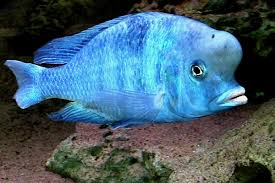
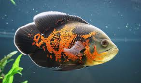

Рыбы – представители класса позвоночных животных, их средой обитания являются пресные и соленые воды. Эта древнейшая группа, по мнению некоторых ученых, существует на планете более 450 млн. лет. На Земле практически нет водоемов, в которых бы не жили те или иные виды рыб. Поражает не только их огромное разнообразие, но и способность адаптироваться в различных условиях.
Экзотические рыбки, которых содержат в аквариумах, часто отличаются причудливой формой тела, малыми размерами и декоративной окраской. Как правило, они теплолюбивы и чувствуют себя комфортно при температуре не менее 18–20 градусов, однако некоторые виды выдерживают более низкий температурный диапазон.
Приняв решение завести тот или иной вид аквариумных рыбок, прежде всего, важно ознакомиться с условиями их обитания в естественной среде, поскольку от этого будет зависеть выбор формы и размера стеклянного резервуара, предназначенного для их содержания. Например, цихлиды и моллинезии требовательны к наличию большого количества кислорода, растворенного в воде, а потому им необходим аквариум большого размера. Для карпозубых живородящих рыбок подойдет резервуар среднего размера. А вот для сомов и лабиринтовых видов рыб, способных дышать кислородом из атмосферы, средой обитания в природных условиях служат придонные слои водоемов, поэтому для них размер аквариума не имеет существенного значения.
Декоративные рыбки сумели не только приспособиться к существованию в искусственной среде, но и смогли сохранить высокую репродуктивную способность. Все же, несмотря на это, аквариумисту необходимо приложить усилия, чтобы по возможности воссоздать условия, максимально приближенные к природным и к тому же подходящие для конкретной породы рыб. Имитация различных особенностей, характерных для родных мест обитания рыбок, поможет достичь прекрасных результатов. Также стоит обратить внимание на качество корма, поскольку сбалансированное и разнообразное питание способно хорошо повлиять на размер и окрас, присущий тому или иному виду рыб. Немаловажным фактором для успешного содержания и разведения аквариумных рыбок является их совместимость друг с другом. Во-первых, особое внимание необходимо обратить на размер рыб. Не нужно помещать в один аквариум мелкие и крупные породы, поскольку это может привести к полному или частичному истреблению мелких особей. Во-вторых, рыб, которые по своей природе являются хищниками, не стоит содержать с другими видами, кроме того, их агрессия может распространяться и на остальных обитателей аквариума, например, улиток. В-третьих, важно учитывать темперамент рыбок, поскольку попытка совместить шустрых и подвижных и спокойных и медлительных, может привести к нежелательным последствиям.
В разделе "Аквариумные рыбки" представлена информация о наиболее популярных семействах и видах аквариумных рыбок. Здесь Вы найдете описания, множество видео-материалов, большое количество фото аквариумных рыбок, и с легкостью определите своих питомцев по фото и узнаете их названия (причем как русские названия, так и латинские названия аквариумных рыбок). Из материалов раздела можно будет узнать о требованиях к условиям содержания и разведения Ваших любимцев. Ведь не секрет, что каждое семейство и каждый вид аквариумных рыб предъявляет свои требования к обустройству аквариума, к характеристикам воды в аквариуме. И если Вы хотите, чтобы Ваши питомцы чувствовали себя комфортно, необходимо создать им соответствующие условия.
Красный попугай или рыба-попугай - это аквариумная рыбка из семейства цихловых.Этот вид является искуственно созданным гибридом аквариумной рыбки. Еще в 1991 году тайваньским селекционерам удалось получить потомство от скрещивания Cichlasoma synspillum и Cichlasoma citrinellum, которое и положило начало постоянно увеличивающейся группе гибридов, объединенных коммерческим названием рыба попугай.
Дельфин голубой - популярная аквариумная рыбка, принадлежащая к семейству цихлид или цихловых. Латинское название рыбки: Cyrtocara moorii.Эта рыбка обладает высоким, немного вытянутым в длину и уплощенным по бокам телом. Голова крупная, губы довольно толстые, обладает большими и подвижными глазами. У взрослой особи мужского пола на лбу имеется выделяющийся жировой нарост. Дельфин голубой не агрессивная рыбка, но как и все цихлиды, предпочитает защищать свою территорию от других обитателей аквариума.

Астронотус или павлиний глаз - популярный представитель семейства цихлид. Латинское наименование этой аквариумной рыбки: Astronotus ocellatus.Астротонус обитает в Южной Америке, в притоках Амазонки, Параны и Парагвая. Отечественные аквариумисты впервые познакомились с этим видом рыбок в 1958 году. "Павлиний глаз" довольно крупная рыбка, но несмотря на это, является одной из самых популярных видов аквариумных обитателей. Это миролюбивая рыбка, со спокойным характером, хотя немного пугливая. Однако, мелкие рыбки могут пострадать от крупного Астротонуса, поэтому в соседи ему желательно выбирать рыбок равного размера.
Информация в разделе "Аквариумные рыбки" постоянно обновляется и пополняется новыми материалами с описанием аквариумных рыб, добавляются фотографии. Не забывайте следить за обновлением.
Адрес: г. Киев, ул. Шпака 3